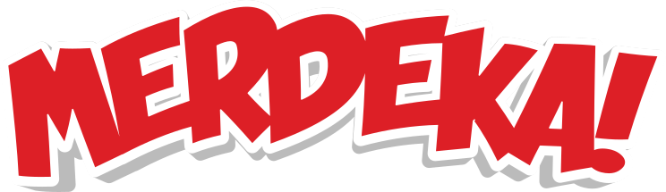

sampai denganRp5,000,000!
Tap layar / tekan SPASI untuk melompat

Satu langkah lagi
Masukkan email untuk mengunci hadiahmu
Pilih Pelompatmu
Geser untuk memilih — kamu melawan 3 peserta lainnya
Hadiahmu

sampai denganRp5,000,000!
Tap layar / tekan SPASI untuk melompat
Masukkan email untuk mengunci hadiahmu
Geser untuk memilih — kamu melawan 3 peserta lainnya